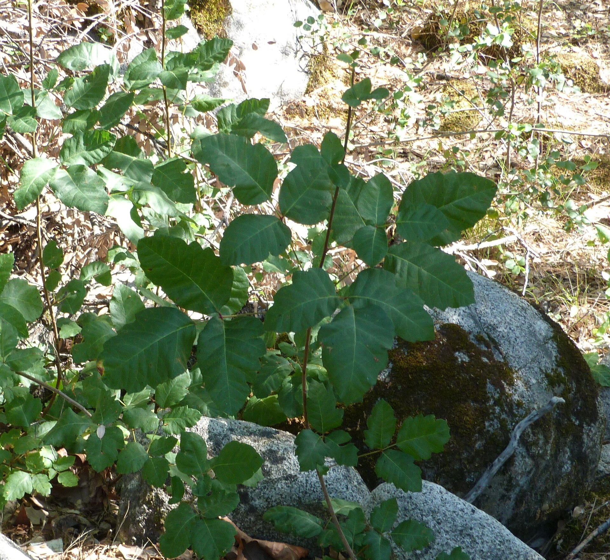

Do not eat / Native / Shrub
Poison Oak
Toxicodendron diversilobum
- Season
- Year-round; red in fall, bare canes in winter
- How to recognize it
- 'Leaves of three,' glossy and scalloped, often reddish; grows as a shrub or climbing vine.
- Why it matters
- Causes a fierce urushiol rash. Even leafless winter stems trigger it — when in doubt, don't touch.
- Recognition boundary
- This guide is for recognition practice only, not field use. Confirm real plants with a qualified local source before touching or using them.